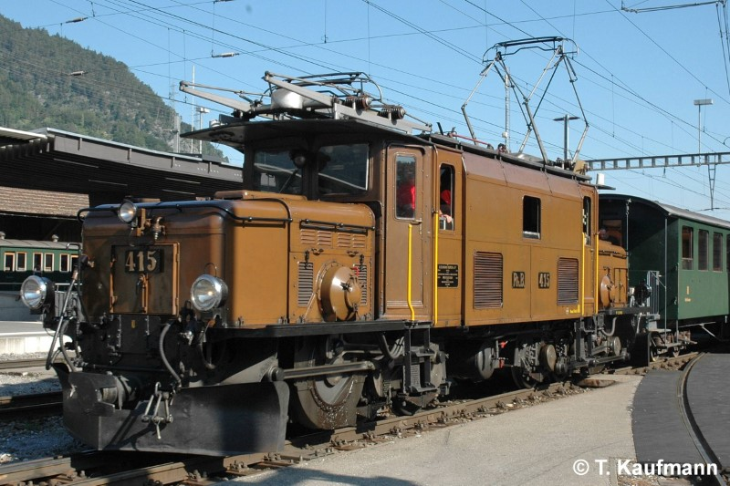

Allgemein
| Baujahr | 1929 |
| Einsatz | StN |
| Antriebstechnik | Stufenschalter |
| Leistung | 1200 PS / 882 kW |
| Ergänzungsbremse | elektrische Bremswiderstände |
| Stationiert | Samedan |
Technische Daten
| Geschwindigkeit | 55 km/h (Reihe A) |
| Länge | 13.20 m |
| Gewicht | 66 t |
| Bremsgewicht | 60 t |
| Feststellbremse | H 2x 39 kN |
Fahrzeugausrüstung
| Vielfachsteuerung | keine |
| Zugbeeinflussung | ZSI 127 |
| Heizleitung | keine |
| Speiseluft-Leitung | keine |
| Bremssystem | Vakuum-Hauptleitung |
| LBT-Leitung | keine |